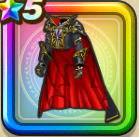

漆黒伯爵のコート上
攻略班 7.5点 / ヒャド属性耐性+5%ドルマ属性耐性+5%バギ属性耐性+5%ドルマ属性耐性+5%【魔法戦士】バギ属性ダメージ+2%バギ属性斬撃・体技ダメージ+5%
くわしい特徴
【レベル別習得スキル】 Lv1ヒャド属性耐性+5% Lv8すばやさ+5 Lv10ドルマ属性耐性+5% Lv12【魔法戦士】バギ属性ダメージ+2% Lv15バギ属性斬撃・体技ダメージ+5% Lv18バギ属性耐性+5% Lv20【魔法戦士】こうげき魔力+5 Lv23さいだいHP+5 Lv25ドルマ属性耐性+5% 【限界突破スキル】 1凸こうげき魔力+5 2凸守備力+5 3凸守備力+7 4凸さいだいHP+5